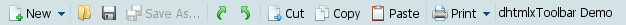
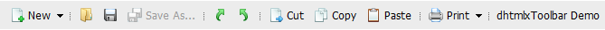

Initializing dhtmlxToolbar
New Toolbar Object Creation
The first steps that need to be taken for dhtmlxToolbar's initialization are the following:
- Download dhtmlxToolbar 2.0 package from the server and place it in a folder;
- Create an index.html file;
- Place a full path to the CSS file into the <head> tag of html file. This file determines toolbar's appearance according to the chosen skin (in this example we use dhx_blue skin). That's why we recommend our users to make up their mind on which skin they are going to apply on this very step;
- Place the full paths to JS files into the <head> tag of html file.
<head> <script src="[full path to this file]/dhtmlxcommon.js"></script> <script src="[full path to this file]/dhtmlxtoolbar.js"></script> <link rel="stylesheet" type="text/css" href="[full path to this file]/dhtmlxtoolbar_dhx_blue.css"> </head>
The user needs to create an object where dhtmlXToolbar will be placed later. In this example the object is a <div> element on page, which is placed in the <body> tag.
<div id="toolbarObj"></div>
The next step is to create a new dhtmlXToolbarObject and place it after the <div> element (object) that we've just created:
<script> var toolbar = new dhtmlXToolbarObject(baseId, skin); </script>
baseId defines an HTML object on page to which the toolbar is attached (the main toolbar container in the code mentioned above). skin is the optional parameter which defines the skin, that will be applied to the toolbar. If this argument is not set, the component will be created with the default skin (dhx_blue).
So, in our case the code will look like this:
<script> var toolbar = new dhtmlXToolbarObject("toolbarObj"); </script>
Setting Image Path
Method setIconsPath() should be used to set the full path to the directory, where toolbar image files are located. By means of this method the user is able to set path to the directory, where icons images are stored.
The following code string should be placed before any of data loading methods:
<script> toolbar.setIconsPath("[full path to icons image files directory]"); </script>
Setting RTL mode
By default text direction in toolbar is set as left to right. For languages with right to left text direction the user can set RTL mode using setRTL() method:
toolbar.setRTL(true); // false will set toolbar mode to LTR
Available Skins
The following predefined skins are available for dhtmlxToolbar users:
| dhx_skyblue | |
| dhx_blue |  |
| dhx_black | |
| dhx_web |  |
Note: other skins that were available in older versions of Toolbar are currently being updated.